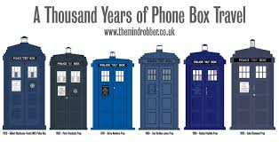
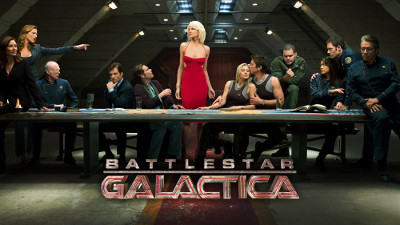
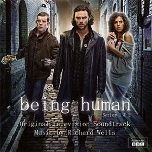
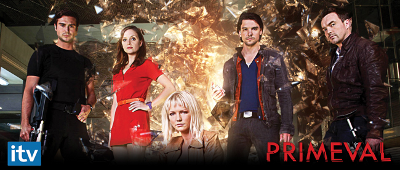

History of Hobbies
by Lance Eddleman
Dr. Who

Doctor Who:
Original series - TV Series 1963
Doctor Who was originally intended to be a family educational TV program. Two of the original main characters were science and history teachers. A lot of the early stories were pure historicals with no aliens. These historical stories were phased out at the end of the 60’s as the more alien settings increased in popularity. thedoctorwhosite
2005 series - About the Show, The Doctor is an alien Time Lord from the planet Gallifrey who travels through all of time and space in his TARDIS. His current travel companion is Clara Oswald, though he has a long list of friends and companions who have shared journeys with him. Instead of dying, the Doctor is able to “regenerate” into a new body, taking on a new personality with each regeneration. Eleven actors, plus John Hurt, have played the Doctor thus far. BBC America

Why Doctor Who:
There were many times when a new doctor or companion was brought in that I really didn't think I would like, but after just an episode or two I completely changed my mind and was totally on board with them.
I think the show was extremely well written and had the right balance of funny and intrigue. Would recommend to anyone and is great for the entire family.
Credits:
Initial blurbs from BBC UK and BBC Amercia, information and images accredited to and property of Copyright © 2015 BBC
Battlestar Galactica
Battlestar Galactica:
Considered by many to be one of the best television series ever made, Battlestar Galactica picks up just as Cylons - intelligent robots designed by humankind - commit mass genocide against humanity. Only Battlestar Galactica, the last of the Colonial Fleet, survives the attack. Driven by prophetic visions and political necessity, the Galactica travels through uncharted space in hopes of finding the mythical, lost 13th colony – Earth. - syfy.com

Why Battlestar Galactica:
I remember well the 1978 series. It was one of the first major series my siblings and I was allowed to watch. I remember thinking how cool and futuristic it was. When the remake came out in 2004 it was a no-brainer for me and it did not disappoint. Besides the main Cylon "Tricia Helfer / Number Six" is smoking hot!
Credits:
Information and images accredited to and property of Battlestar Galactica franchise.
Being Human
Being Human:
Being Human is a British supernatural drama television series. It was created and written by Toby Whithouse for broadcast on BBC Three.[1] The show blends elements of flatshare comedy and horror drama. The pilot episode starred Andrea Riseborough as Annie Sawyer (a ghost), Russell Tovey as George Sands (a werewolf), and Guy Flanagan as John Mitchell (a vampire) – all of whom were sharing accommodation and attempting as best as they can to live a "normal" life and blend in with the ordinary humans around them. - wiki

Why Being Human:
I was looking for something different to watch and this is definitely different. Vampire Werewolf and Ghost WTH! Oddly enough I was pretty hooked after just a couple of episodes.
I really enjoyed the inner fight each had to be more human I thought the acting was great and the characters developed more as the series went on. Over all a series that I would recommend but only the UK version.
My personal opinion on the US remake. Don't waste your time watch and enjoy the original the way it was intended. The minor changes made to the US version were not enough to make it different and ended up being a really poorly done knock off.
Credits:
Information and images accredited to and property of BBC 3 / BBC UK / BBC America.
Primeval
Primeval:
When rips in time called anomalies started opening across the UK, dangerous creatures from the past and future began appearing in the most unexpected places, endangering lives and placing the whole of humanity at risk.
A crack team of specialists were appointed by the government to investigate and control “creature incursions,” creating the Anomaly Research Center (ARC), which was later privatized. Matt, Abby, Connor and Becker do the field work while Jess mans the ARC control station under the leadership of government official James Lester and the mysterious scientist, Philip Burton. -BBC America

My Primeval:
When I watched this episode my kids were between the ages of 7 and 13 and were totally into dinosaurs. As a parent I wanted to watch something with them that was totally boring for me but wasn't too adult for them. This fit the bill for us. It did have some intense moments for the youngest but over all it was well done and we really enjoyed the stories and the characters.
Credits:
Information and images accredited to and property of BBC America.
TV Shows:
Life's busy schedule often keeps me from ever getting time to watch TV especially series. New tech like tivo and DVR have helped get past that. Even better are services like Netflix, Hulu, and Google Play, as well. But I often find that after a few episodes I lose interest any way. There have been very few shows that have held my attention and keep me fighting for free time just to watch them.
The time I can get I also like to spend with my family so finding shows that are family friendly rate a lot higher for me then any others.
Dr. Who:
Why: Easily one of the best family friendly shows out there. Even though the concept progresses each episode has a strong start middle and ending wrap up so even if you haven't seen them all you can sit and enjoy an single episode.
Why Not: There are many seasons and once you start it is hard to stop. Because I still have to get up the next day to go to work so all night binge watching is bad for your career.
Battlestar Galactica:
Why:
Why Not:
Being Human:
Why:
Why Not:
Primeval:
Why:
Why Not: